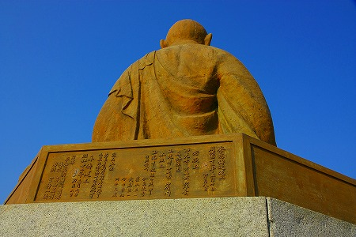
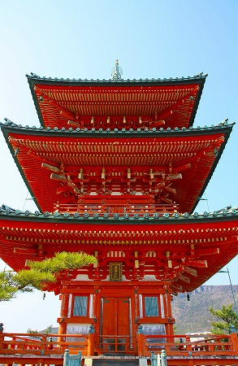

小豆島の洞窟寺院巡りもそろそろタイムアップの時間が近づいてきた。
締めは島の中心部である
土庄の町にある西光寺。
土庄は典型的な港町で、小さな家屋が迷路のように入り組んでいる。
ペイントした浮き玉をオブジェとして並べるのは最近よく見かけるような気がする。
そんな中にあった素敵な仏サマの絵。
定時制には美術の授業がないのだな。多分。
最後に訪れた、と言ったが実はこの島で最初に訪れた寺もこの西光寺だった。
船が着いたのが早朝で、移動手段がなかったので徒歩で行ける西光寺の奥の院である三重塔に寄っていたのだ。
まずは早朝の訪問時の様子を。
三重塔だけを目印にトボトボと歩いていく。
三重塔が見えてきた。

傍らには弘法大師の像が。
鋳造製の大師サマだ。

裏書によると明治42年に建立されたが、昭和32年に再鋳造されたとある。
戦時中に金属供出でもあったのだろうか。
…という辺りまでは朝の内に見ていたのだが、実はココ、西光寺の奥の院であって、実際の西光寺は三重塔の位置する高台の直下にあるのだった。
んで、島を一巡りしてきて、若干、帰りの船の乗船時間などを気にしつつ西光寺に向かったのである。
立派な朱塗りの山門を潜るとそこには本堂が。
本堂の右後ろの岩山の上に先に訪れた三重塔がある。
この位置関係を覚えておいていただきたし。
本堂の中には
戒壇巡りがある。
階段を下りていくと…
おおお、
宮島の大聖院を髣髴とさせるドリーミンな展開。
薄暗い空間に大量の灯りが灯り、幽玄な雰囲気を醸しだしていた。
案内してくれた住職さんとしばし話す。
話題はどうしても時節柄、震災の件に。
私自身は関東から来たので、東北の方々に比べたら申し訳ないほど微々たる被害だったのに心から心配してくださった。ありがたいことです。
そんな地下空間を堪能していると上りの階段があるという。
見れば
洞窟のような階段があるではないか。

のぼらいでか。
地下空間から延々のぼっていく。
最早、地上どころかそれ以上の高みに上っているような気がしてならない。
と、視界が明るくなり、そこに現れたるのは…。
本堂のはるか上に位置する三重塔の地下室だった！
もう一度本堂と三重塔の位置関係を確認ね。
本堂の背後にある岩山を貫通してトンネル階段が設けられていたのだ。
しかも一旦地下に降りてから。
これ凄くないすか？
地下から地上に出る。
そこには目の前に三重塔がそびえていた。
そう、朝訪問した場所にいたのである。

さっきまではるか上にあった三重塔があっという間に目の前に。
何とも不思議で大掛かりなギミックである。
塔の傍らにいらっしゃる大師サマ。
やや傾きかけた陽を正面に浴びてまぶしそう。
台座は中に人が入れるほどのスペースがあるが用途は不明。
これを見てふと思い出したことがあった。
それは今から10年以上前、当時このサイトを熱心にご覧になっていた方から
小豆島には中に入れる大仏がある、と聞いたことがあったのだ。
順当に考えれば小豆島大観音の事だとは思うのだが、話の様子からするともっと小さいみたい。
私が頭の中で思い浮かべたのは
ニュルンベルグの鉄の処女のような人体にフィットしたサイズの仏像。
もしそんな素晴らしい仏像があるのならぜひとも見たい！
そしてパイルダーオン！して仏様と一体化したい！
…と思っていたのだが、その方とも音信普通になってしまい（もしご覧になってたらご一報くださいねー)、詳細は判らず仕舞い。
結局、今回も島を一回りしてみたもののそれらしき仏像は発見できず。
今になって思えばもしかしたら少しイメージは違ったけどここの大師サマの事だったのだろうか、と思う次第。
もしも、真相をご存知の方は是非ご一報くださいませませ。
…スミマセン。話題が逸れた上に迷走してしまいました。
というわけでそろそろタイムアップだな。
港に行かねば。
港に向かう途中、小豆島霊場総本院なるところがあった。
島四国のセンター的な存在で大勢の人がお参りに来ていた。
…の近くのビクターの犬。サイズ小さくなってます。
というわけで何の感慨もなく慌しく乗船。
そうだ、港で
八日目の蝉ごっこしようと思ってたのにぃ〜。
「その子はまだ朝ごはんを食べてないの！」的な。
…まあ、いいか。独りぼっちだし…。
船からは先ほどの三重塔が見えた。
高台にあるだけに妙に目立っているなあ。
そんなこんなで小豆島洞窟寺院巡りはこれにてお開き。
行けなかった洞窟寺院もたくさんあるのでその内また行くことになるでしょう。
長々とお付合いいただき、ありがとうございました。
完